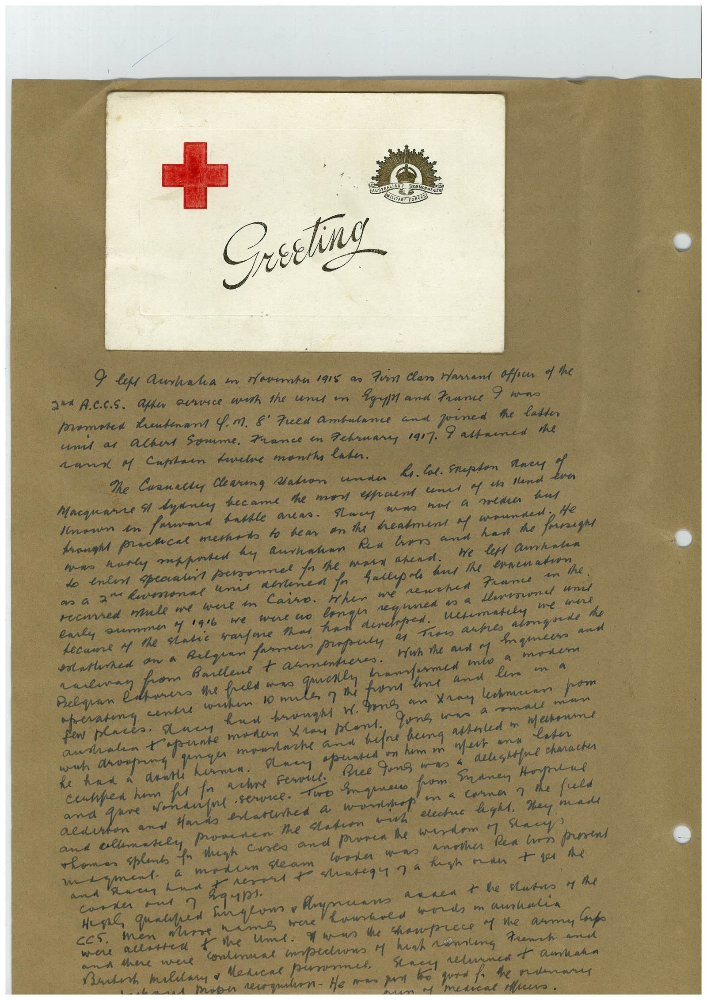

Book 1 · scan 021


Description
Transcription
Context
Review notes
Compare the machine draft with the scan. Handwriting and names need human review.
Artifacts
Edit the artifacts field in this note’s frontmatter to change these records. This summary is generated.
B01-S021-A01 — Greeting card & Handwritten note — Book 1, scan 021
Types: Greeting card, Handwritten note
Scope: Whole scanned page; individual items can be split out during review.
Caption: Not mapped yet.
Caption source: Not recorded yet.
Caption status: unmapped
Machine transcription
Greeting 9 les Acrinalia in saventas 1915 as fin Class Harrant affecr of the 2 A.C.C.S. after arce wish the uns in Egypt and France I wans mamases deutenant 4. m. 8" Fued ambulance and joined the latter unt as achas Somme. France in February 1907. rama 4 Captan tavele months later. I assauned the Me Cranally daring Mation under Li. Cal. Srupton Ances Yes Macquare & lynney became the mon epaent unes of is Hand. Unsun en farward babble areas. Huer mum nas a mena hus tomost practical mestads to hear on the headment of wounded negl do enter specialis personnel for the mars arend. we left amanha roused mule me were in Cairo. When me renched France in the. carly ammmer y 196 we were wo recame M the natic wantone than han Congreen as a throned und кентанем me wee satired an a Reloan farmers propula Troo artes almasede the alman from Barlent t armentores. maneers and eratna centre couton 10 ma havers the felt was gen the from me and less on a had brought w. pons an tray lamann pom and tone moto ran plant. lone ens a smale mun west and later Bree fung was a delistsful character in a corner 7 the full and ellenasely provenen te saton wh elecas hght, they made Thomas splen fo thigh cases and prosen the wisdom y say caster mas another Rea too prosens сока нил ? were kims were were alaster t the une. I mas the champrace y me army Cupo and there were continuas impedions of hush vening French and Berth maliary o Medical persomel metical speero